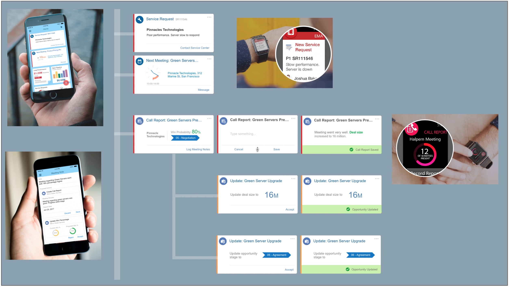
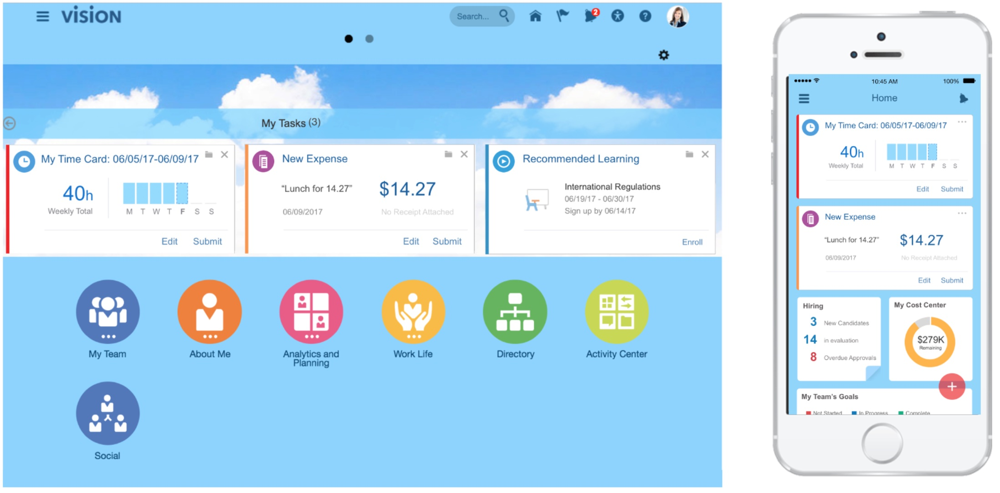
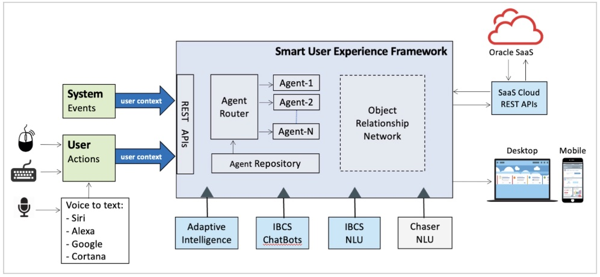
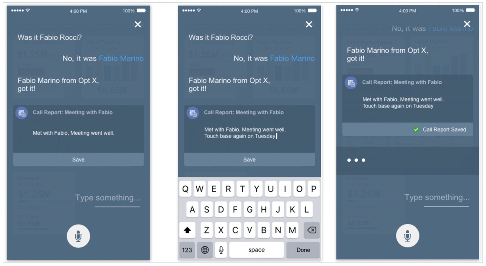
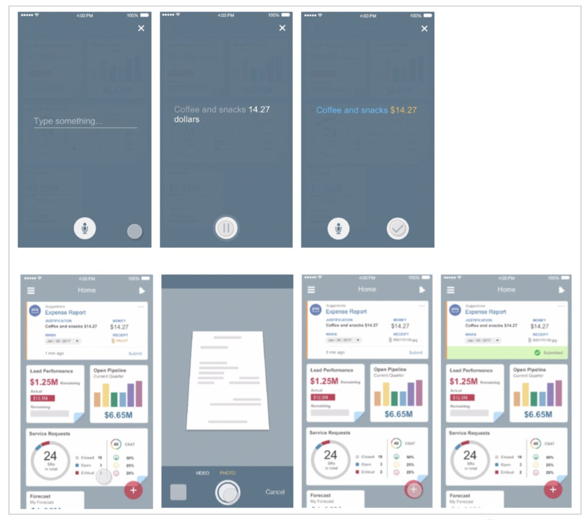

Design for AI
AI is not indifferent to core design values and principles and it should be built with the user in mind. When designing a product that includes AI, it is very important to think about the experience and its context. To unlock the full potential of AI, one should (1) think about how people are already doing things, (2) identify what can be automated, and (3) use AI to reduce friction. Doing this well means being thoughtful on where and how to automate the experience, focusing on areas where there are clear examples of how the system should perform to compare to, so the design team can evaluate whether to automate the experience at all. Listing out clear user workflows and use cases allows AI automation to work within context so that the experience for the user will be positive and streamlined. It also helps to build an AI system that is targeted and can be tested and improved at every stage so that the product will be less likely to have errors that can reduce user trust.
Notifications based on User Intent
At Oracle, I was a first adopter of AI technology and pioneered the concept of intelligent UX which aimed to use AI to reduce cognitive load and improve decision-making. Seeing the potential synergies across Oracle products, I looked for ways to simplify the experience of Oracle Cloud customers and unlock the value of using the full Oracle product suite. This was best done through automation.Since most of the Oracle products were built around predefined workflows, I saw room to develop a notifications-based solution that would prioritize the information shown to the user based on context, location, and events that are critical to their work, as well as automated portions of the workflows, allowing the user to accept, reject or edit the recommendation.
For example, knowing that Sales Reps are always on the go, and that being aware of the latest updates can be the key to helping them close a deal, the system could prioritize information and notify them on the changes, on the right device at the right time (click here to see a detailed example). If a Sales Rep was about to enter a meeting with a customer that just logged a ticket, the system could identify the ticket as a highly important event, pushing information about it to the user's smartwatch and mobile phone. It could also identify the best time to prompt the Sales Rep to log a ‘call report’ — a mandatory step after meeting a customer — updating the notification with information based on what is already known about the meeting and suggesting updates to streamline workflows as needed (see figure 8 and 9).
Figure 8: Smart Notificaion on the go Figure 9: Time sensitive notifications will show on the phone, while all notifications will show on a tablet/laptopThe model kept a record of notifications that were dismissed without taking action, and the type of corrections a user made when editing suggestions. The idea was to use this information to train the system. We set simple rules, for example, if a user dismissed the same card without taking action 3 times, the system would prompt the user for feedback on the suggestion. If the user consistently did not engage with a suggestion, the system assumed it was not useful, and did not push it again. At any point in time, the user could go to an ‘Activity Center’ where we kept all notifications that were sent to the user allowing them to customize their preferences.
Once we developed this model for CRM, I worked with pillar leaders across Oracle cloud applications, identifying workflow and use cases where this model would be useful. Collaborating with Data Science and front-end engineering, we developed a POC for the ‘Smart UX platform’, using simple rules, NLU, and Relationship Networks to predict user intent and automate flows (see figure 10). The rules were fully extensible and could be leveraged and enhanced by machine learning. This platform was used to prioritize notifications, tasks, and suggestions, as well as to track incomplete tasks to ensure maximum user productivity. We then pushed this POC to the Platform team which enabled it across all of Oracle Cloud services.
Adding NLU, NLP, Developing Capture, a Voice assistance
Wanting to enhance the notification model with voice assistance, I asked the data science team (at that time it consisted of one person) if we could leverage the work done for the smart notifications to create a framework that would analyze sentences recorded by the user, and be able to identify and categorize actions, names, and potential recommendation based on ‘reserved words’ per role and the user relationship network model.
For example, if the user recorded “met John for lunch to discuss Coffee Technologies”, the system could identify that in the context of that specific user, John was the customer POC (point of contact) for the opportunity ‘Coffee Technologies’. The system could then ask the user if they wanted to log a ‘Call Report’. However, if the user would say something like “$129.10 for lunch with John to discuss Coffee Technologies” the system would be able to identify that $129.10 is the cost of the lunch, and ask the user if they wanted to log an expense report rather than update an opportunity.
Figure 11: Architecture OverviewThe data scientist was very excited asking for a list of reserved words for a sales rep, and use cases to help train the system. With the help of the front-end engineer who collaborated with us on the notification model, we built a framework (see figure 11) that could identify a string of text as a "Recorded Event" and invoke the NLU component. The user intent to log an expense was identified using NLP and NLU. The combination of keywords like ‘lunch’ and 'John' who is a client, helped define the intent. NLP, Location and Time and Relationship Network were all used to populate the fields in the expense form.
Figure 12: An example showing how the system interacts with the user when ambiguity is raised about a name the user used Figure 13: Using voice-to-text and smart notifications to identify and execute on user intentChoosing where to automate: designing with humans in the loop
At Flexport I lead our UX efforts to integrate Gen AI into our products. One product that leadership tagged for automation was our scheduling logistics notification and support offering. In the first version of our AI-based solution, we tried to automate a part of the scheduling timeline that is extremely volatile. The volatility meant that there were constant mistakes and our operators learned to ignore the AI recommendations. We also assumed that if we were transparent and shared a grade for the AI prediction, representing the likelihood of the AI to be correct, they would trust and use it. The opposite happened. The operators invested extra time, verifying the automated suggestions, which increased time-to-task, and with that the cost to serve. Learning from this experience we changed our model to center user trust by building human-in-the-loop systems that would empower users and help us continuously train our models.Talk to me to hear more about my thoughts on user-based AI development and my experience developing AI-infused experiences including chatbots.